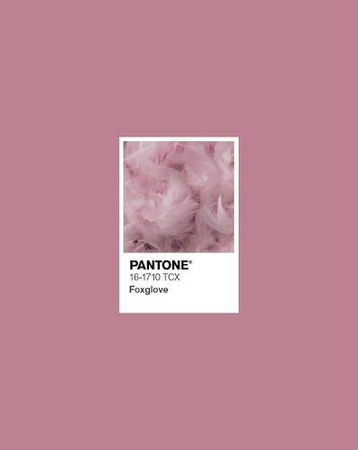

.jpg)
18-july 2021/dizayn
Sizga shu rang ma'qulmi?
• Rasmda nafaqat rang, balki sokinlik va nafislik bor. 🌸 • Minimalizm go‘zalligi — oddiy qoshiqdagi tuz ham san'at asariga aylanishi mumkin. 🥄🎨 • Dunyoni o‘z ranglaringiz bilan bo‘yang. Xuddi mana shu PANTONE 691 kabi muloyim va iliq. • Atrofimizdagi mayda detallarda ham ulkan go‘zallik yashiringan. Uni ko‘ra olish — baxt.
Read more.jpg)
20-july 2020/dizayn
Sizga shu rang ma'qulmi?
• Qizilning eng chuqur, eng boy hidi va ta'mini eslatuvchi jilosi — PANTONE 19-1531 TCX. 🍅✨ • Quyoshda quritilgan pomidor, pishgan anor va qizil greypfrut jozibasi bir joyda. • Kuchli, chuqur va o‘ziga tortuvchi ranglar estetikasi. 🌹 • Ba'zi ranglar shunchaki ko‘rilmaydi, ular his qilinadi. Kuz va qish faslining haqiqiy iliqligi.
Read more
16-may 2023/dizayn
Sizga shu rang ma'qulmi?
• Patlar kabi yengil, xuddi shu rang kabi mayin va nafis tun-u kun tilayman. 🪶🌸 • PANTONE 16-1710 TCX: Ko'zga charchoq bermaydigan, qalbga xotirjamlik bag'ishlaydigan rang. • Ba'zi ranglar insonga iliqlik va quchoq taftini eslatadi. Foxglove — ana shunday ranglardan biri. ✨ • Minimalizm va absolyut mayinlik uyg'unligi.
Read more